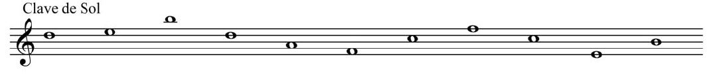
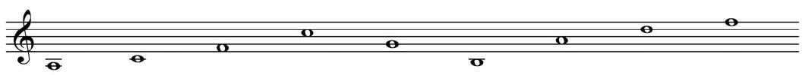
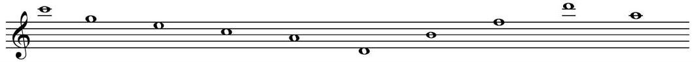
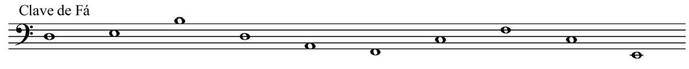
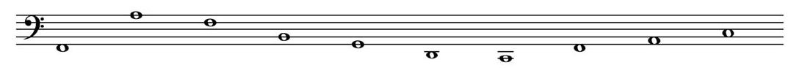
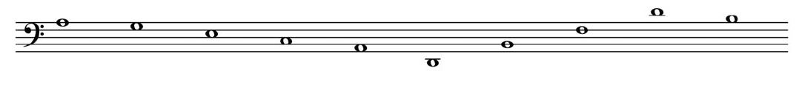

Exercício Interativo de Leitura Musical
Selecione a nota correta abaixo de cada imagem. Nota: Você só poderá finalizar o exercício após preencher todas as opções.
Clave de Sol - Linha 1
Pontos: --

Clave de Sol - Linha 2
Pontos: --

Clave de Sol - Linha 3
Pontos: --

Clave de Fá - Linha 1
Pontos: --

Clave de Fá - Linha 2
Pontos: --

Clave de Fá - Linha 3
Pontos: --

Total Geral: 0 / 59
(0%)